Mood tracker for iPhone
Your mood,
painted as a sky.
I'm bad at saying how I feel. So I made an app where you drag the sky instead of picking a word. Ten seconds a day, and your weeks turn into weather.
Why I made it
I never kept up with mood apps. Their charts and scores felt like homework at the end of a long day. So I made one where you just drag a sky, and over the weeks the skies tell you things you didn't notice about yourself.
Aakash, the one person behind Inner Sky
How it works
Two touches. That's the whole check-in.
No forms, no scores, no blank page. You move the sky to match the day, and Inner Sky does the remembering.
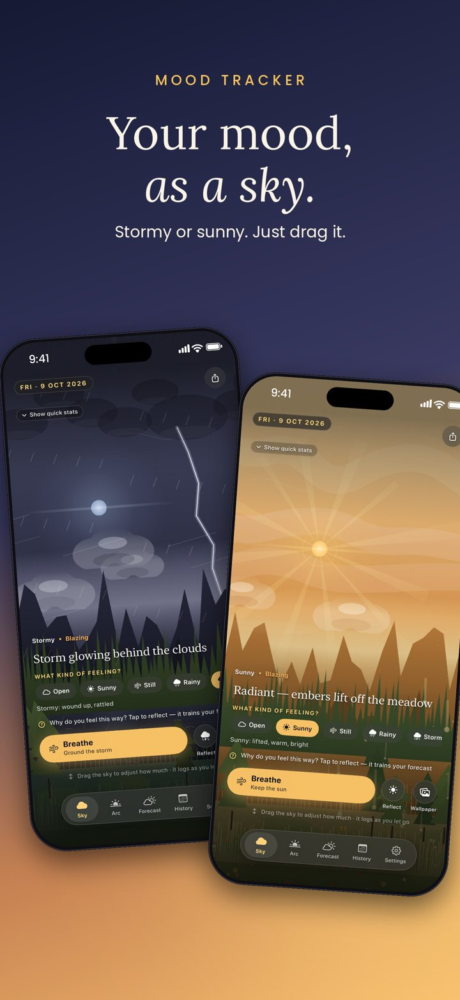
ONE
Drag the sky
Stormy, cloudy, clear or blazing. Up and down for how strongly you feel it.
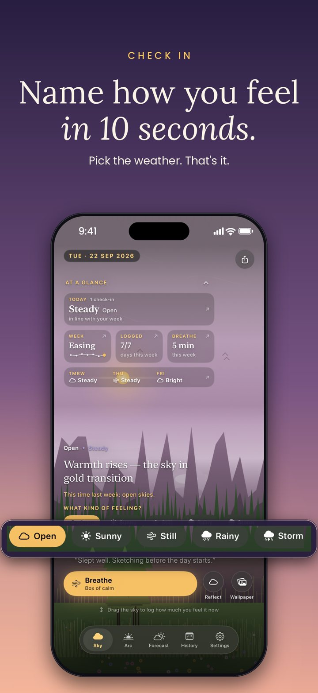
TWO
Name it in 10 seconds
Tap the weather that fits, and if you like, what shaped it: sleep, work, people.
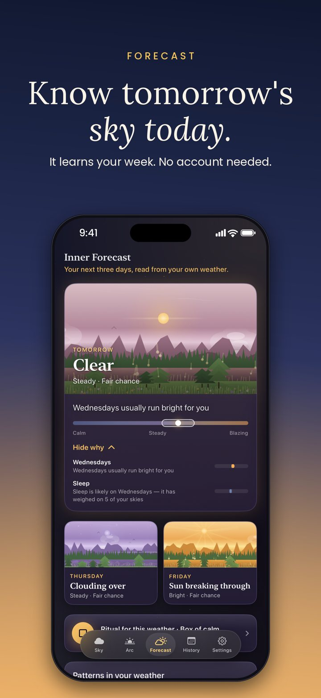
THREE
Get a gentle forecast
After a few days it learns your rhythm and paints tomorrow's likely sky, with the reasons why.
See it move
Every day gets its own weather.
Real screens from the app. Some days are blazing, some are quiet, some just storm. All of them are allowed.
Look back
Your days, drawn as weather.
Patterns show up on their own. No charts to read, just skies you'd happily keep.
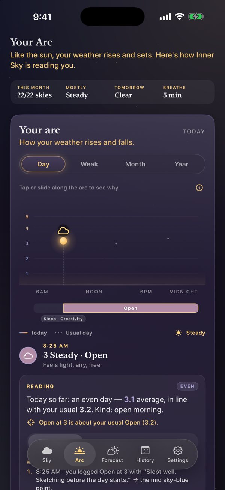
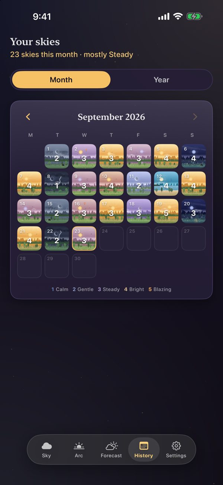
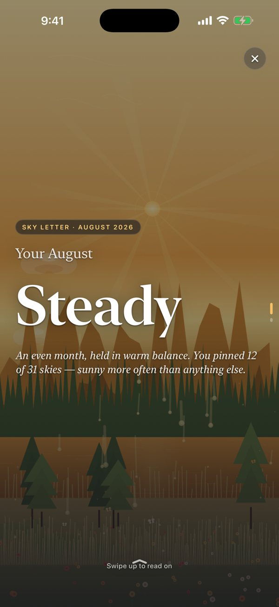
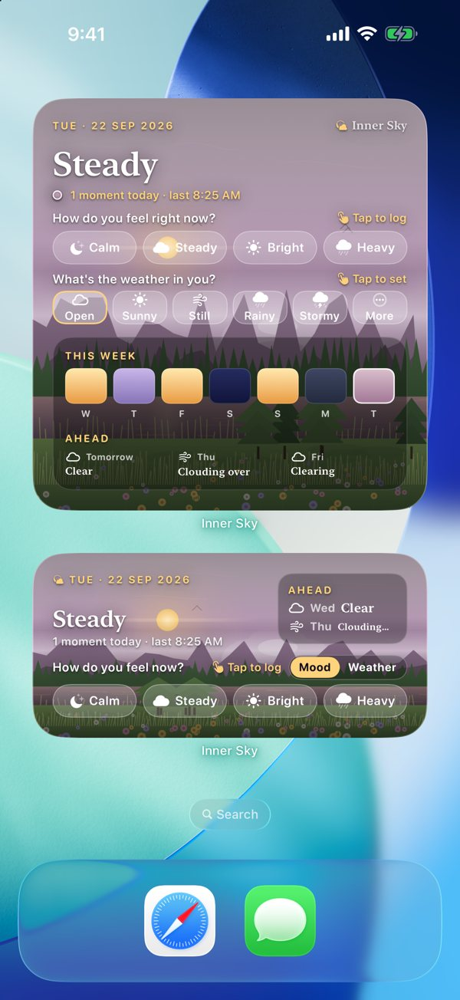
Today's sky
A week of naming my feelings, one sky at a time.
A small daily series on YouTube and Instagram. A new day at 12:30 pm IST.
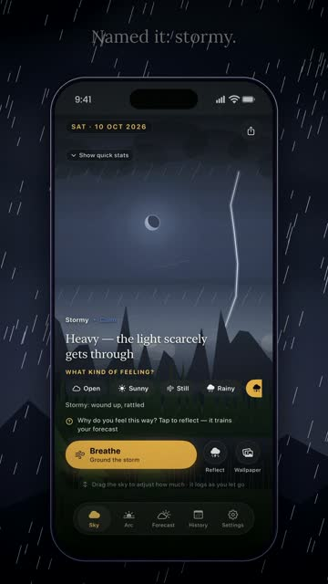
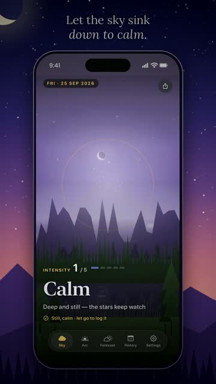
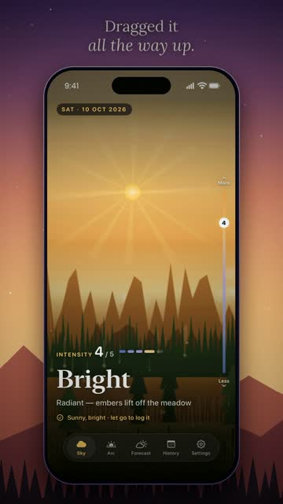
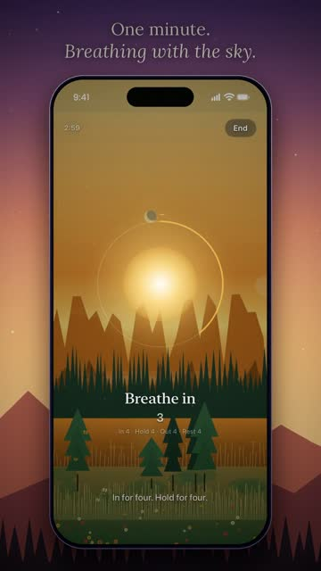
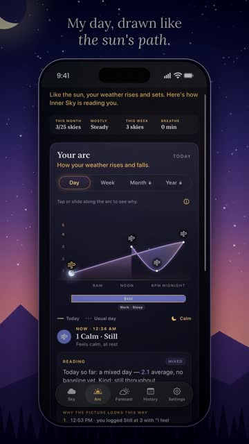
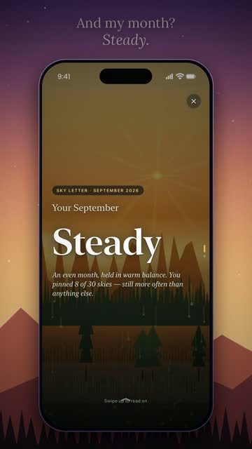
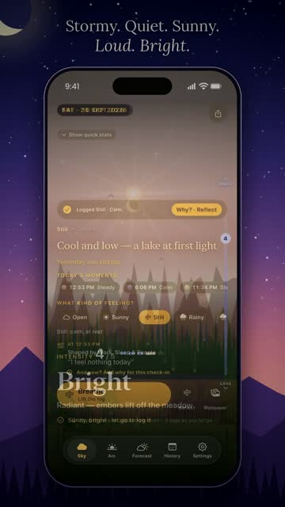
Sky Lessons
Tiny lessons about feelings, with a cloud who has them too.
Short animated films I make for YouTube and Instagram. Each one is about one small idea that helped me.
From the feed
Little skies, shared most days.
Covers and stories from Inner Sky on Instagram and YouTube.
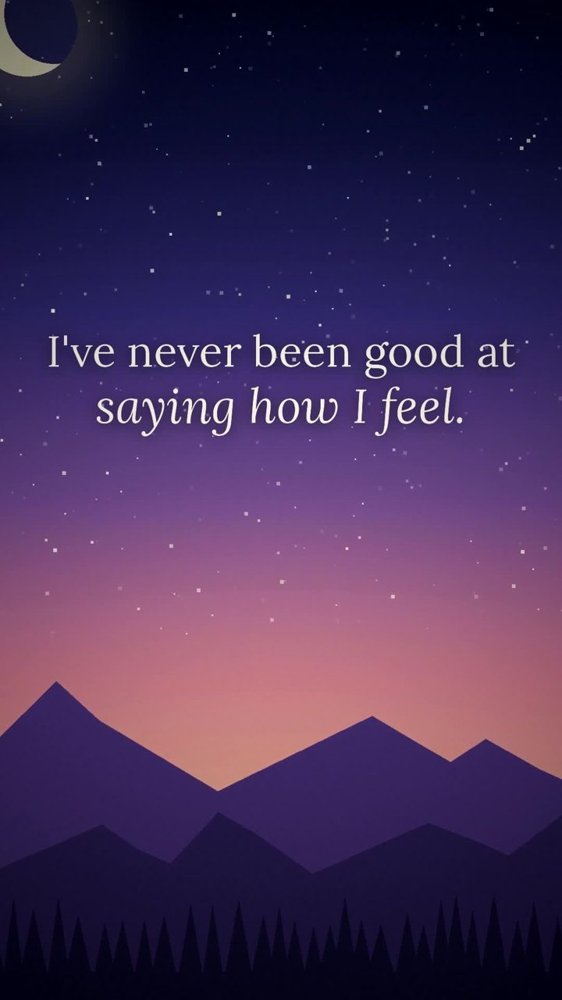
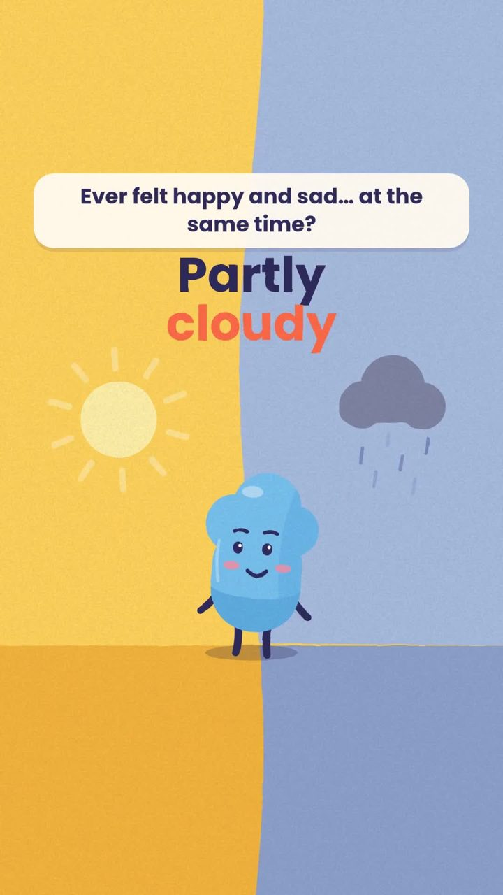
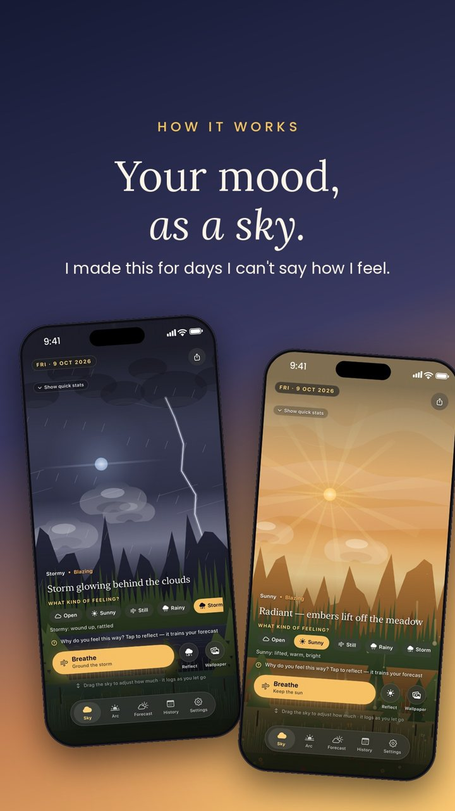
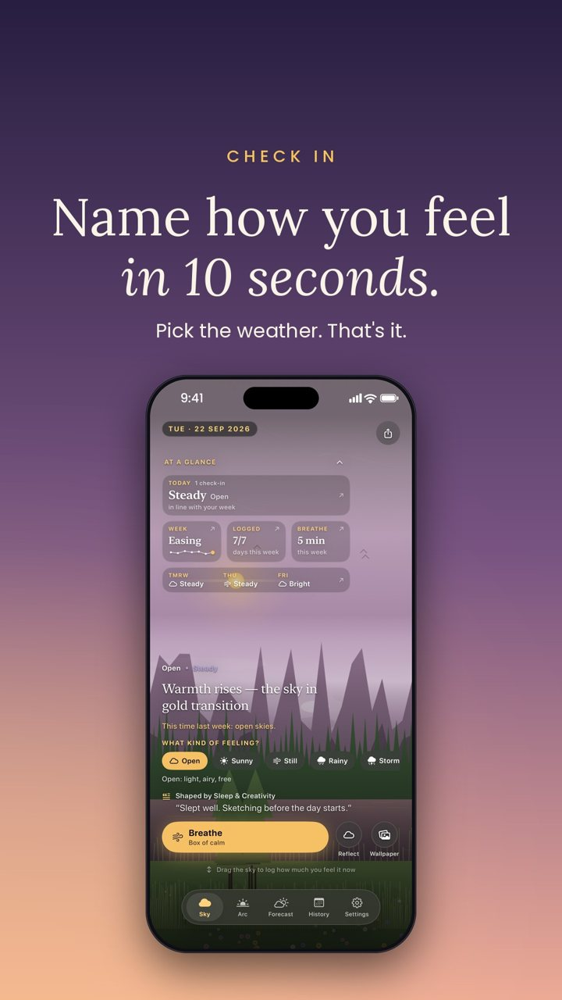
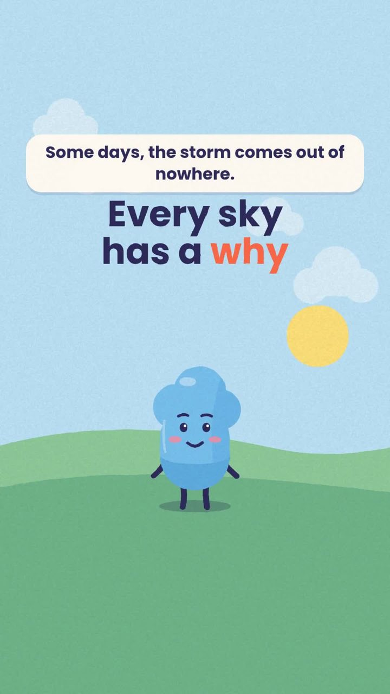
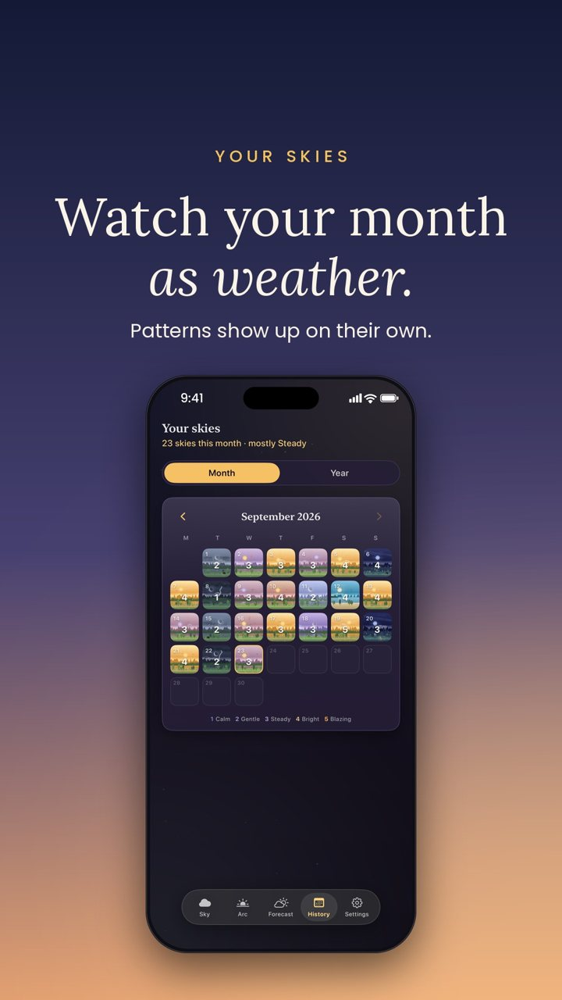
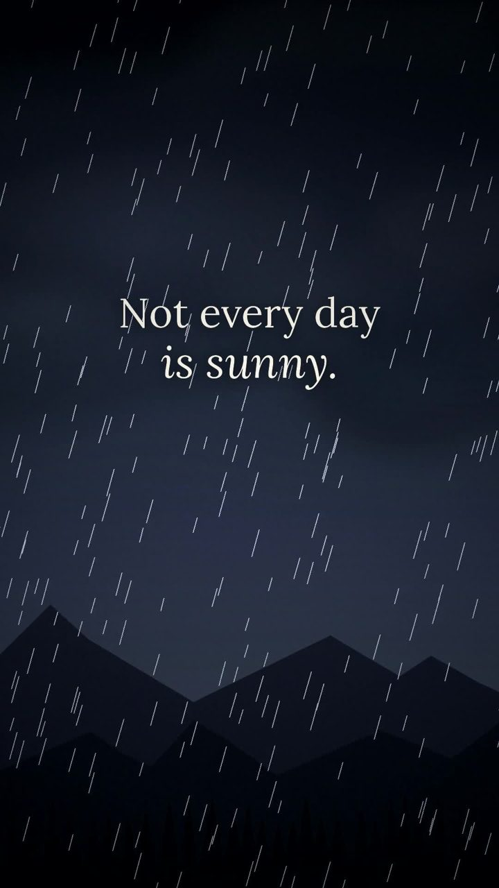
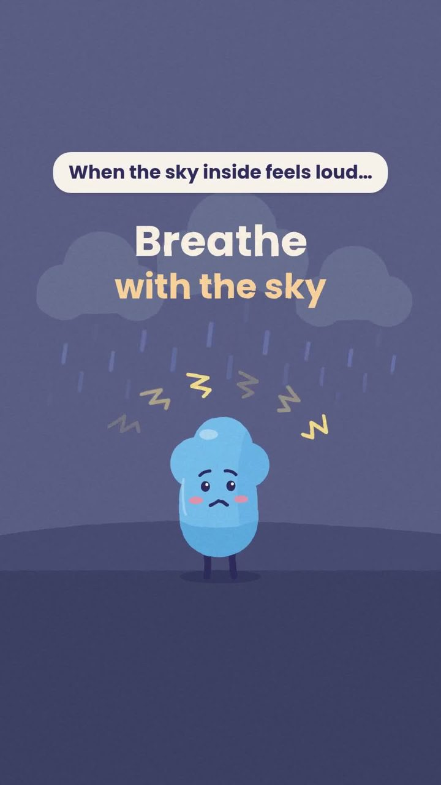
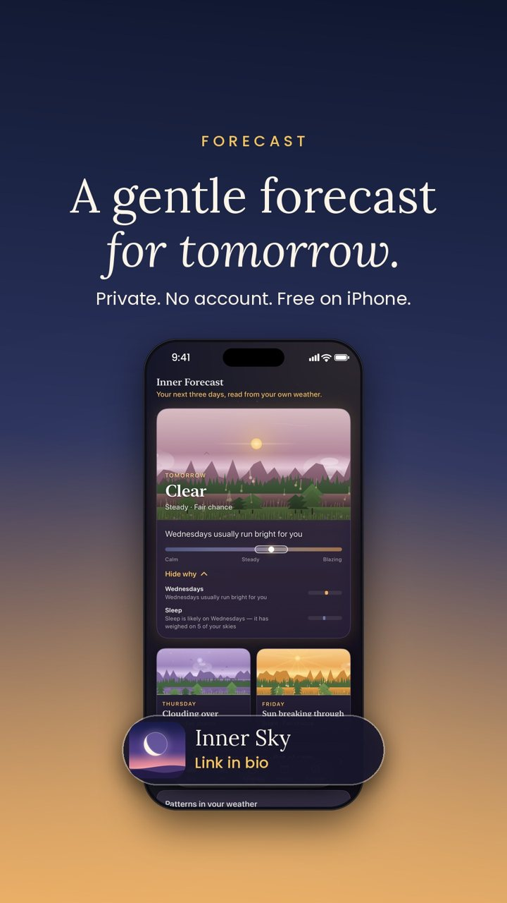
Private by design
Your skies stay with you.
Nothing to sign up for, nothing to log into. Open it and check in.
Your skies, reasons and notes are stored on the device. There's no web dashboard.
iCloud backup is optional and off by default. Turn it on only if you want it.
Support
Something feel off?
If a check-in won't save, a widget won't update, or you have a question about Inner Sky Plus, email me:
Please mention your iOS version and what you tapped last.
Why is my forecast not showing yet?
The forecast reads patterns across days, so it needs check-ins on four different days. Several check-ins on the same day count as one day.
The Lock Screen buttons open the app instead of logging.
iOS needs the phone unlocked with Face ID or Touch ID before a widget button can act. Tap again after unlocking.
How do I restore Inner Sky Plus?
Open Settings → Inner Sky Plus → Restore purchases. Purchases are tied to your Apple ID, so they come back on a new iPhone.
How do I delete my data?
Delete the app and every sky, note and reason goes with it. If iCloud backup was on, turn it off in Settings first to clear the backup copy.